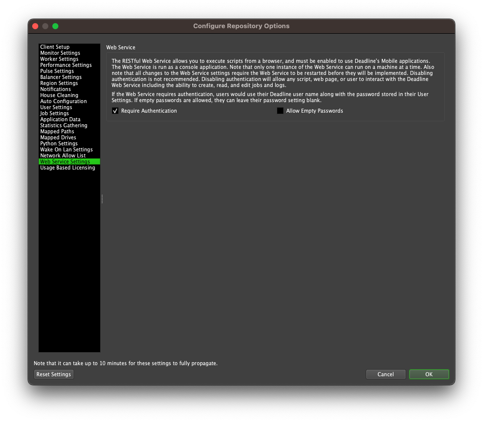

Web Service¶
Overview¶
The deadlinewebservice application is a command line application for the Deadline render farm management system. It allows you to query information from Deadline over an Internet connection. You can write custom Web Service Scripts to display this information in a manner of your choice, such as a web page.
You can find the deadlinewebservice application in the Deadline bin folder (Windows or Linux) or the Resources folder (macOS).
Setup¶
Before you can use the web service, you need to configure it. Global settings can be configured from the Web Service Settings in the Repository Options.
Per-machine settings can be configured using the deadline.ini file on the machine that the web service is running on. See the Client Configuration WebService Settings.
RESTful HTTP API¶
The RESTful API in the web service can be used to request information from the database, store new data, alter existing data or remove entries from the database.
The RESTful API should only be used with authentication enabled. Users with access to the Deadline Web Service are able to create, read, and edit jobs and logs. Workers will execute jobs created by a user. Authentication prevents the web service from being used by unauthorized parties.
See the REST Overview documentation for more information.
Additional Web Service Functionality¶
This additional web service functionality is still supported, but is now deprecated in favor of the new RESTful HTTP API.
Connecting to the Web Service¶
You can connect to the web service using a URL containing the host name or IP address of the machine that is hosting the web service application, as well as the port, which we will assume to be 8081 for now (this can be configured in the Web Service Settings). Note that if port 8081 is being blocked by a firewall, the web service will not be able to accept web requests. An example URL will look like the following:
http://[myhost]:8081/[command]?[arguments]
Where:
myhost is your web service server’s IP address or host name.
command is the script name you want to execute. This is explained in the following section.
arguments represents the arguments being passed to the command. This can be optional, and depends on the command.
To confirm that you can at least connect to the web service, try the following URL.
http://[myhost]:8081/
You should see the following if you connect to the web service successfully:
This is the Deadline web service!
Calling Python Scripts¶
The commands are actually Python scripts that you can create in the Repository. These scripts use Pulse’s Python API to get data, and then return the data in a readable manner. So basically, you can create scripts to access any type of data and display it in any way you want. See the Web Service Scripts documentation for more information on how to create these scripts.
Once a script has been created, you can call it by using the name of the script, without the .py extension. For example, if you have a web service script called GetFarmStatistics.py, you would call it using:
http://[myhost]:8081/GetFarmStatistics
Some scripts can take arguments. To include arguments, you need to place a ‘?’ between the command name and the first argument, and then a ‘&’ between additional arguments. Here is an example of how you would pass arg1, arg2, and arg3 as separate arguments to the GetFarmStatistics.py script:
http://[myhost]:8081/GetFarmStatistics?arg1&arg2&arg3
The way the results are displayed depends on the format in which they are returned. Again, see the Web Service Scripting documentation for more information.
Windows Namespace Reservation¶
If the web service is running on Windows, you may also need to add a namespace reservation for the current user that the web service is running under, so that it can reserve namespaces for the URL connection. See the Configuring Namespace Reservations section in this MSDN Article for more information. Note, Windows XP users require SP2 to be installed and XP 64bit does NOT support namespace reservation. It is recommended to use a server based Windows OS such as Windows 2003, 2008 R2, 2012 or newer.
Note that by default, the web service listens on http://*:8081/, so make sure you set the port number correctly in the URL you use when reserving the namespace. For example:
netsh http add urlacl url=http://*:8081/ user=DOMAIN\username
Ensure you have correctly elevated Windows permissions when executing the above in a command prompt and replace username with the appropriate %USERNAME% that the web service is running under. For machines not on a domain, simply remove the DOMAIN prefix, but keep the backslash. Depending on your local security policy, the user account may need to have local administrator rights temporarily for you to initially reserve the namespace. The namespace reservation will also need updating if you ever modify the port number or user account used. Use the following command in a command prompt to help list what namespace reservations are currently present on your machine:
netsh http show urlacl
Note that this is NOT the same reservation that is required for the Remote Connection Server.
Linux Open File Limits¶
If the web service is running on Linux, it is recommended that you increase the maximum number of open files for the web service process. Since socket connections are treated as open files on Linux it is very easy for the default maximum value (1024) to be reached in an active farm. We recommend setting it to at least 200000. You can set by running the following command before running the web service:
ulimit -n 200000
The web service will check the file limit on startup and print a warning to the beginning of the log if it is set to a value that is too low, but will run anyway.

{kind=link}